2.3. Matplotlib#
Matplotlib is a comprehensive library for creating static, animated, and interactive visualizations in Python. - Matplotlib
import matplotlib.pyplot as plt
import numpy as np
2.3.1. 1. Plot a line#
# make a square function
def square(x):
return x**2
# Make x and y values.
# np.linxpace() is a function that returns evenly spaced numbers over a specified interval.
# We use it to make x values from -5 to 5 with 100 points in between.
x = np.linspace(-5, 5, 100)
y = square(x)
# plot the function. ` plt` is an alias for `matplotlib.pyplot`.
plt.plot(x, y)
plt.show()
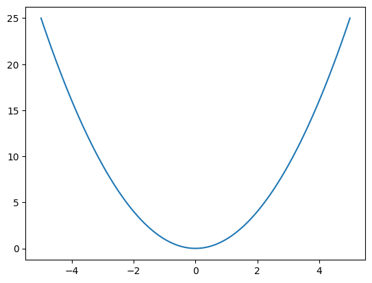
# plot the function. ` plt` is an alias for `matplotlib.pyplot`.
plt.plot(x, y)
# Add labels to the axes
plt.xlabel('x')
plt.ylabel('y')
# Add a title
plt.title('Square function')
plt.show()
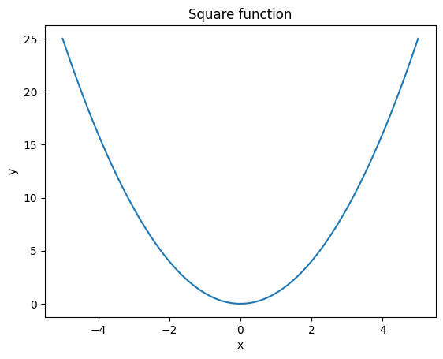
Change color, marker style and line style#
x = np.linspace(-5, 5, 10)
y = square(x)
# You can specify the color, marker, and line style in the plot function as below.
plt.plot(x, y, color='red', marker='o', linestyle='--', label='label')
# Show the legend. It uses the `label` defined in the `plot()` function.
plt.legend()
# Add labels to the axes
plt.xlabel('x')
plt.ylabel('y')
# Add a title
plt.title('Square function')
plt.show()
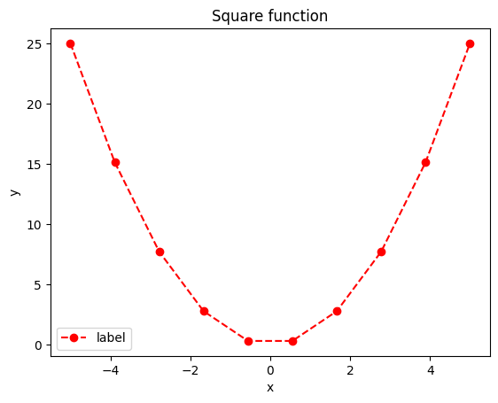
Add cube function plot.
def cube(x):
return x**3
x = np.linspace(-3, 3, 10)
y = square(x)
z = cube(x)
# You can specify the color, marker, and line style in the plot function as below.
plt.plot(x, y, color='red', marker='o', linestyle='--', label='Square')
plt.plot(x, z, color='blue', marker='x', linestyle='-', label='Cube')
# Show the legend. It uses the `label` defined in the `plot()` function
plt.legend()
# Add labels to the axes
plt.xlabel('x')
plt.ylabel('y')
# Add a title
plt.title('Square and cube functions')
plt.show()
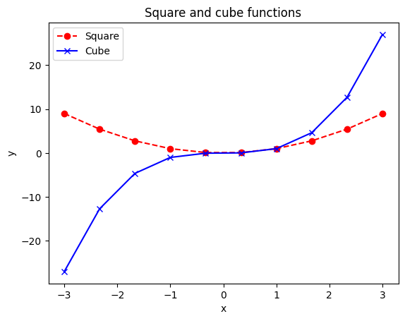
plt.semilogy plots the y-axis in log scale.#
x = np.linspace(0.1, 10, 10)
y = square(x)
z = cube(x)
# You can specify the color, marker, and line style in the plot function as below.
plt.semilogy(x, y, color='red', marker='o', linestyle='--', label='Square')
plt.semilogy(x, z, color='blue', marker='x', linestyle='-', label='Cube')
# Show the legend. It uses the `label` defined in the `plot()` function
plt.legend()
# Add labels to the axes
plt.xlabel('x')
plt.ylabel('y')
# Add a title
plt.title('Square and cube functions')
plt.show()
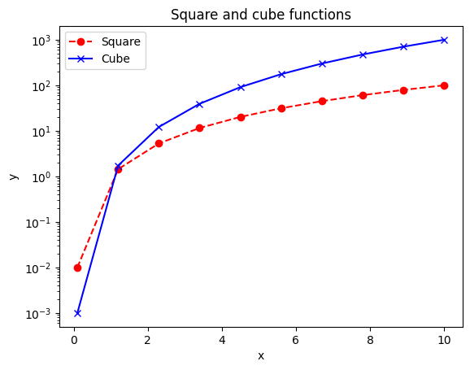
x = np.linspace(-5, 5, 10)
y = np.exp(x)
# You can specify the color, marker, and line style in the plot function as below.
plt.semilogy(x, y, label='Exponential')
# Show the legend. It uses the `label` defined in the `plot()` function
plt.legend()
# Add labels to the axes
plt.xlabel('x')
plt.ylabel('exp(x)')
# Add a title
plt.title('Exponential function')
plt.show()
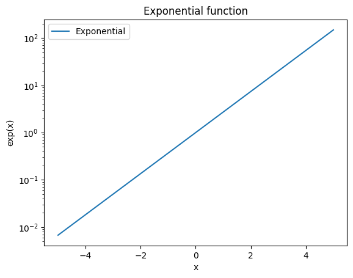
2.3.2. 2. Scatter plot#
# Scatter plot
x = np.linspace(-5, 5, 20)
y = square(x)
plt.scatter(x, y)
plt.show()
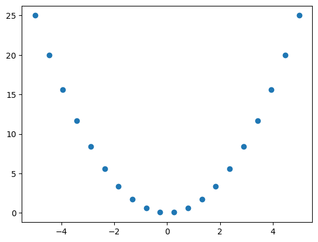
np.random.seed(0)
# Scatter plot: gaussian distribution with mean 0 and standard deviation 1
x = np.random.normal(size=1000)
y = np.random.normal(size=1000)
plt.scatter(x, y)
plt.show()
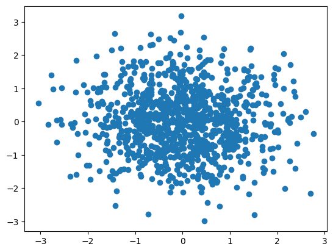
2.3.3. 3. Histogram#
np.random.seed(0)
# Generate 10000 random numbers from a normal distribution with mean 0 and standard deviation 1.
x = np.random.normal(0, 1, 10000)
# Plot a histogram with 50 bins.
plt.hist(x, bins=50)
plt.show()
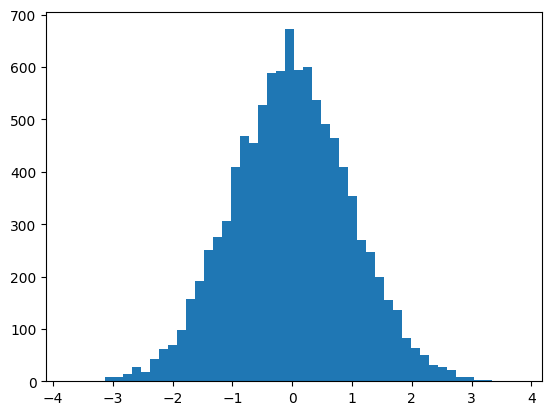
Add another histogram#
np.random.seed(0)
# Generate 10000 random numbers from a normal distribution with mean 0 and standard deviation 1.
x = np.random.normal(0, 1, 10000)
# Generate 10000 random numbers from a normal distribution with mean 2 and standard deviation 0.5.
y = np.random.normal(2, 0.5, 10000)
# Plot a histogram with 50 bins.
# `alpha` is the transparency of the bars. used to compare several histograms.
plt.hist(x, bins=50, color='blue', alpha=0.5, label='x')
plt.hist(y, bins=50, color='green', alpha=0.5, label='y')
# Show the legend. It uses the `label` defined in the `hist()` function.
plt.legend()
# Add labels to the axes
plt.xlabel('value')
plt.ylabel('count')
# Add a title
plt.title('Histogram')
plt.show()
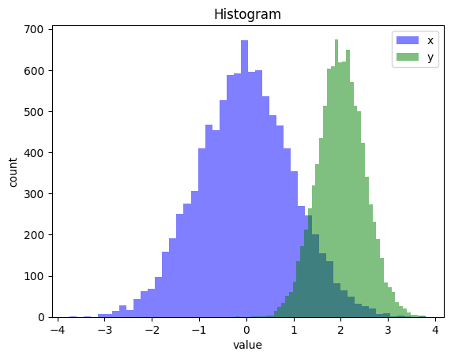
import matplotlib.pyplot as plt
import numpy as np
year = ("2003", "2013", "2023")
gdps = {
'Japan': (4519.56, 5212.33, 4409.74),
'China': (1656.96, 9624.93, 19373.59),
'America': (11456.45, 16843.23, 26854.60),
}
x = np.arange(len(year)) * 1 # the label locations
width = 0.3 # the width of the bars
multiplier = 0
fig, ax = plt.subplots(layout='constrained')
for country, gdp in gdps.items():
offset = width * multiplier
rects = ax.bar(x + offset, gdp, width, label=country)
ax.bar_label(rects, padding=3)
multiplier += 1
ax.set_ylabel('GDP (billion USD)')
ax.set_title('GDP')
ax.set_xticks(x + width, year)
ax.legend(loc='upper left', ncols=3)
plt.show()
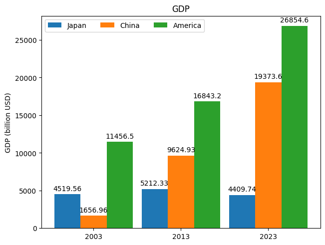
2.3.4. 5. 2D plots#
import matplotlib.pyplot as plt
import numpy as np
t = np.linspace(0, 2 * np.pi, 1024)
data2d = np.sin(t)[:, np.newaxis] * np.sin(t)[np.newaxis, :]
fig, ax = plt.subplots()
im = ax.imshow(data2d)
fig.colorbar(im, ax=ax, label='Colorbar')
ax.set_title('sin(x)sin(y)')
plt.show()
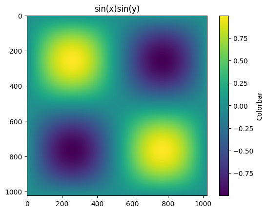
2.3.5. 6. 3D line plots#
def pos(t):
x = np.exp(-t) * np.cos(10 * np.pi * t)
y = np.exp(-t) * np.sin(10 * np.pi * t)
z = t
return x, y, z
t = np.linspace(0, 2, 1000)
x, y, z = pos(t)
fig = plt.figure(figsize=(6, 6))
ax = fig.add_subplot(projection='3d')
ax.plot(x, y, z, label='parametric curve')
ax.set_xlabel('x')
ax.set_ylabel('y')
ax.set_zlabel('z')
ax.set_title("3D Parametric Curve")
plt.show()
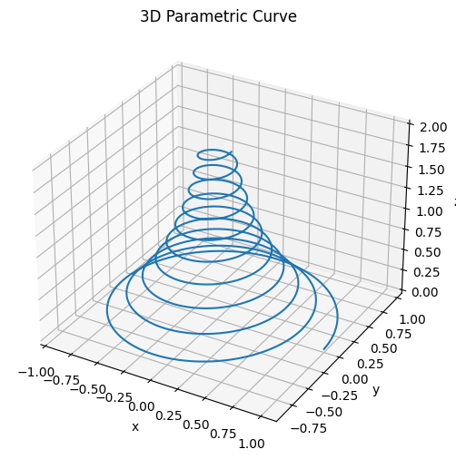
2.3.6. 7. 3D surface plot#
import matplotlib.pyplot as plt
from matplotlib import cm
from matplotlib.ticker import LinearLocator
import numpy as np
fig, ax = plt.subplots(subplot_kw={"projection": "3d"})
# Make data.
X = np.arange(-5, 5, 0.05)
Y = np.arange(-5, 5, 0.05)
X, Y = np.meshgrid(X, Y)
Z = np.sin(X) * np.cos(Y)
# Plot the surface.
surf = ax.plot_surface(X, Y, Z, cmap=cm.coolwarm, linewidth=0, antialiased=False)
# Customize the z axis.
ax.set_zlim(-1.01, 1.01)
ax.zaxis.set_major_locator(LinearLocator(5))
ax.zaxis.set_major_formatter('{x:.02f}')
# Add a color bar which maps values to colors.
fig.colorbar(surf, shrink=0.5, aspect=9)
plt.show()
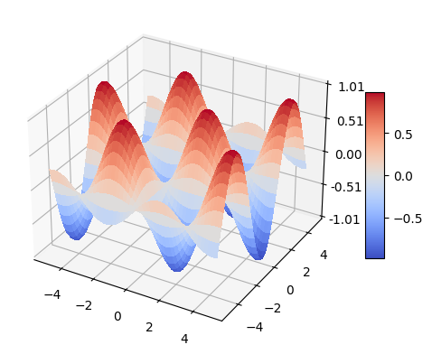